Ivan Andreevich Krylov, fabulist, who died in St. Petersburg in November 1844
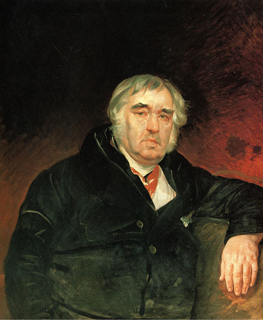
Karl Briullov (1799–1852). Portrait of Ivan Krylov. 1839. Oil on canvas. 102.3 x 86.2 cm. State Tret’iakov Gallery, Moscow. [full resolution image]
Image 187
Fyodor Mikhailovich Dostoevskii, whose first novel, Poor People, appeared in 1846
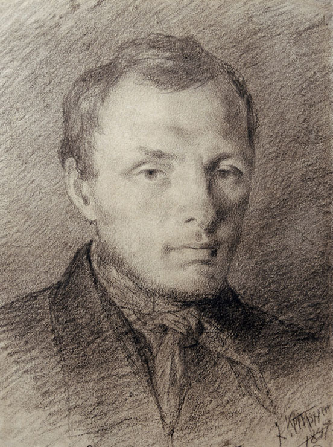
Konstantin Trutovskii (1826–1893). Portrait of Fyodor Michailovich Dostoevskii. 1847. Pencil drawing on paper. 9.8 x 7 in. (25.1 cm x 18 cm). State Literature Museum, Moscow (KP-35716/436). [full resolution image]
Image 188
Vissarion Grigorievich Belinskii, literary critic, who died in St. Petersburg in June 1848
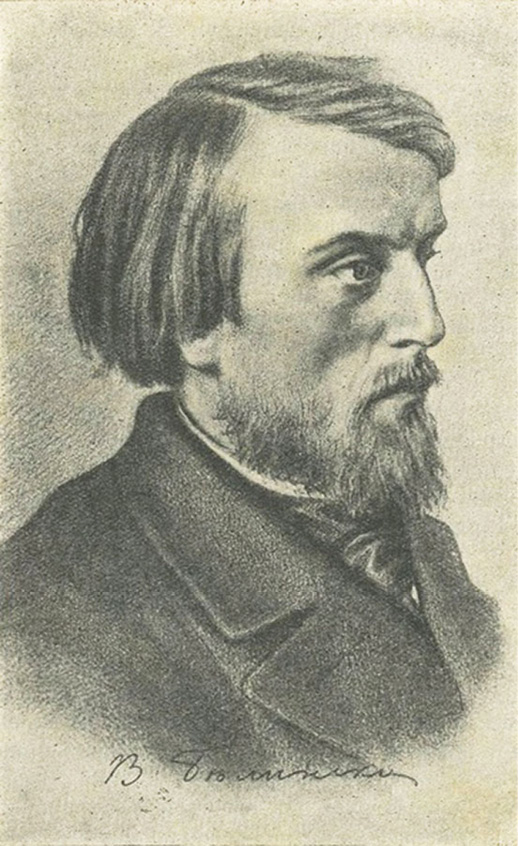
N. Noskov. (V.G. Belinksii 1811–1911 s risunkami i portretami russkikh pisatelei [V.G. Belinskii 1811–1911, With Drawings and Portraits of Russian Writers] [St. Petersburg, 1911], frontispiece) [full resolution image]
Image 189
Reverend Legh Richmond, whose edifying tales of English village life James and Willie Whistler read
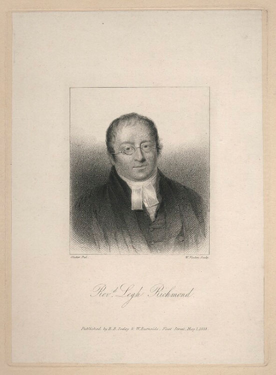
William Finden (1787–1852). Legh Richmond. 1833. Stipple engraving after Joseph Slater published 1 May 1833 by R.B. Seeley & W. Burnside. National Portrait Gallery, London (NPG D8354).
Image 190
Elizabeth Rigby, Lady Eastlake, whose book Letters from the Shores of the Baltic, which included a record of her sojourn in St. Petersburg, Anna Whistler had read before coming to Russia
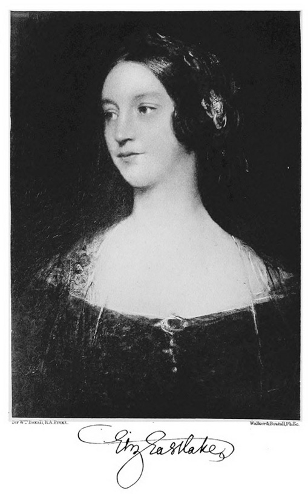
Lady Elizabeth Rigby Eastlake, Journals and Correspondence of Lady Eastlake; Edited by her Nephew, Charles Eastlake Smith; with Facsims. of Her Drawings and a Portrait, 2 vols. [London: John Murray, 1895], vol. 1, frontispiece) [full resolution image]
Image 191
Anna Whistler read and quoted from Dr. John Wilson’s memoir of his wife Margaret (Baine) Wilson, both missionaries in India.
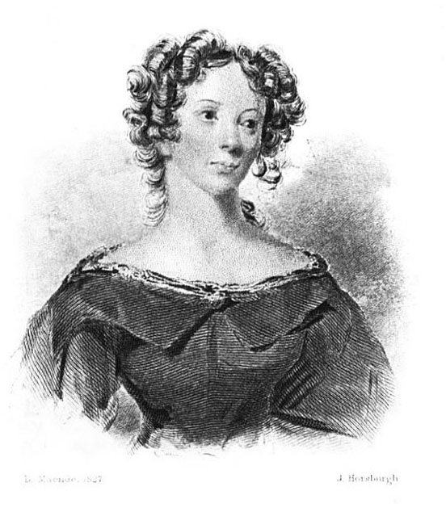
D. Macnee and J. Horsurgh. Margaret Wilson. 1827. Etching. (Wilson, Memoir of Margaret Wilson, frontispiece) [full resolution image]
Image 192
Sir Roderick Impey Murchison, English geologist, who personally delivered a copy of his book on Russian geology to Nicholas I just after the death of Grand Duchess Aleksandra Nikolaevna
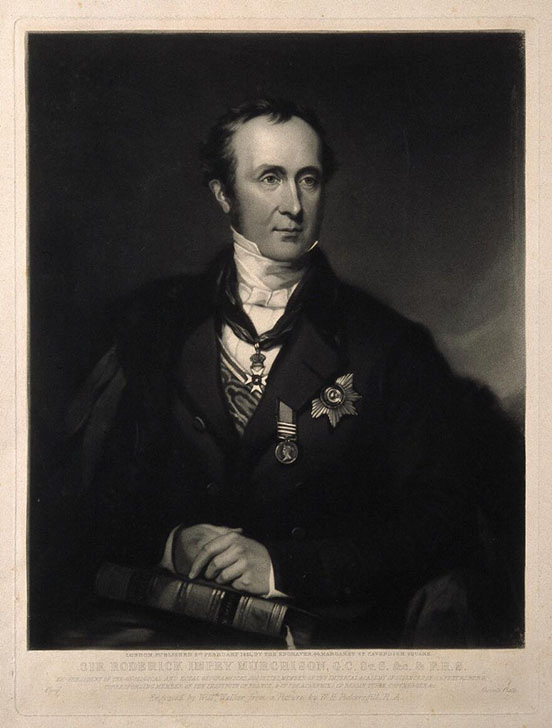
W. Walker. Sir Roderick Impey Murchison. 1851. Mezzotint from an 1849 portrait by Henry Willam Pickersgill (1782–1875). Wellcome Collection. Wellcome Library no. 7095i. [full resolution image]
Image 193
Dr. Edward Jenner, discoverer of the process of vaccination, to whom Charlotte Leon was purported to be related
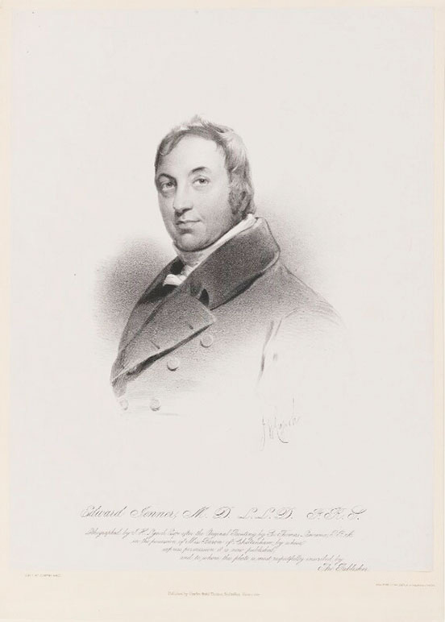
James Henry Lynch. Edward Jenner. c. 1827 (c. 1809). Lithograph published by Charles Heald Thomas, after Sir Thomas Lawrence (1769–1830); printed by Kell Brothers. National Portrait Gallery, London (NPG D21545).
Image 194
Andrei Ivanovich Shtakenshneider, favorite architect of Nicholas I from the 1840s until the latter’s death
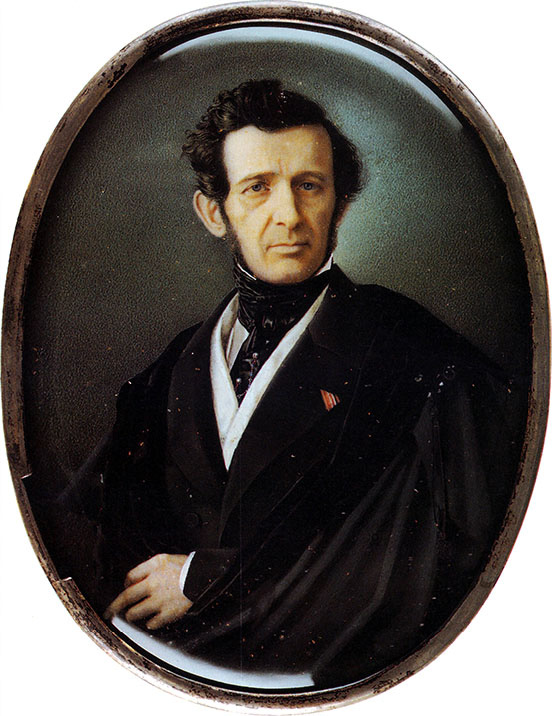
N. Terebenev. Andrei Shtakenschneider. 1854. State Tret’iakov Gallery, Moscow. [full resolution image]
Image 195
Aleksei Fyodorovich L’vov, director of the Imperial Chapel Choir, which moved Anna Whistler to tears
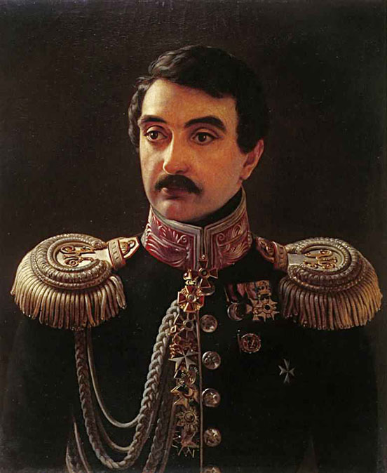
Alexey Vassilievich Tyranov. Alexei Fyodorovich Lvov, Composer. Oil on canvas. 46 x 38 cm (18.1 x 14.9 in.). Samara Art Museum, Russia. [full resolution image]
Image 196
Antonio Tamburini, baritone soloist of the Italian Opera in St. Petersburg, whom the Whistlers heard sing in 1845 at the annual performance celebrating the defeat of Napoleon
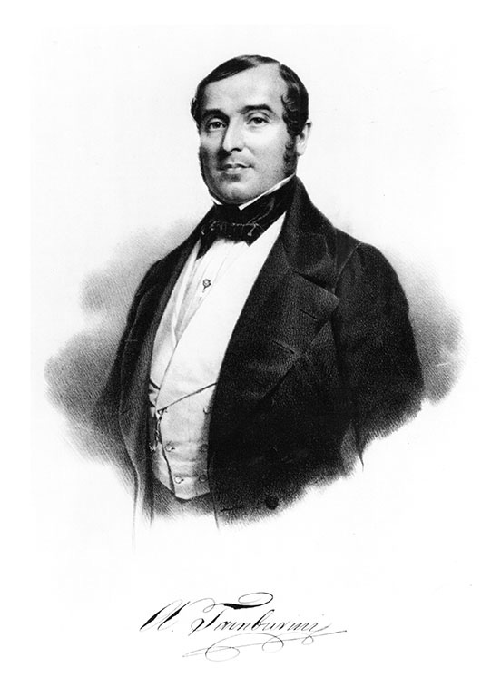
Antonio Tamburini, Baritone of the Italian Opera in St. Petersburg. Institute of Russian Literature of the Academy of Sciences (Pushkin House), St. Petersburg. [full resolution image]
Image 197
Giovanni Battista Rubini, tenor soloist of the Italian Opera in St. Petersburg, whom the Whistlers heard sing with Tamburini in 1845
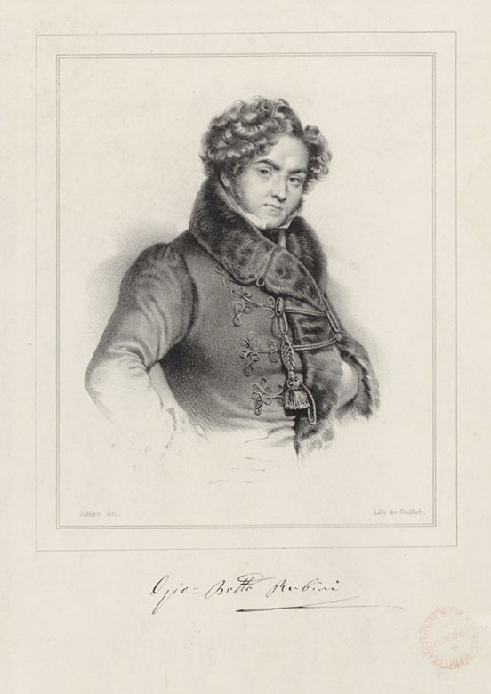
Guillet. 1840. Giovanni Battista Rubini. Lithograph. Bibliothèque nationale de France, Paris. [full resolution image]
Image 198
Polina Viardot-Garcia, soprano soloist of the Italian Opera in St. Petersburg, whom the Whistlers heard sing with Tamburini and Rubini in 1845, shown here in 1844 in the role of Amina in La Sonambula by Vincenzo Bellini
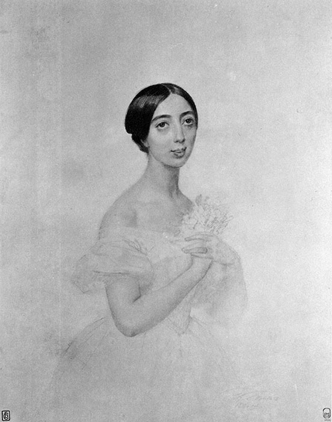
Karl Briullov (1799–1852). Portrait of the Singer Polina Viardot-Garsia. 1844. State Russian Museum, St. Petersburg. [full resolution image]
Image 199
Clara Schumann, pianist, whom Debo heard play two concerts in 1845
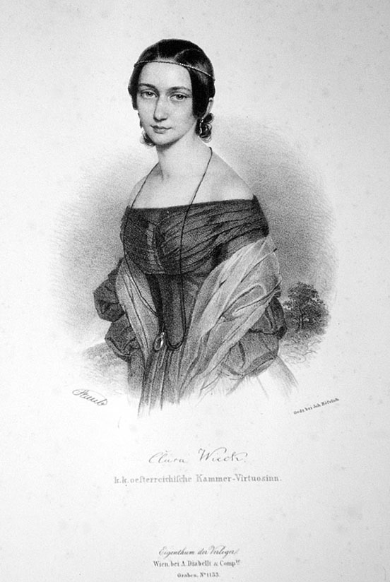
Andreas Johann Staub (1806–1839). Clara Wieck. c. 1839. Lithograph. Private collection. [full resolution image]
Image 200
Robert Schumann, composer, who accompanied his wife to St. Petersburg
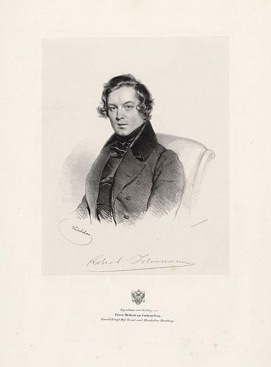
Joseph Kriehuber (1800–1876). Robert Schumann. 1839. 26 x 21 cm (print). Bibliothèque nationale de France, Paris. [full resolution image]
Image 201
The Whistlers heard Herman’s orchestra play in the Pleasure Garden in Pavlovsk, the terminus of the St. Petersburg–Tsarskoe Selo–Pavlovsk Railway, in May 1844.
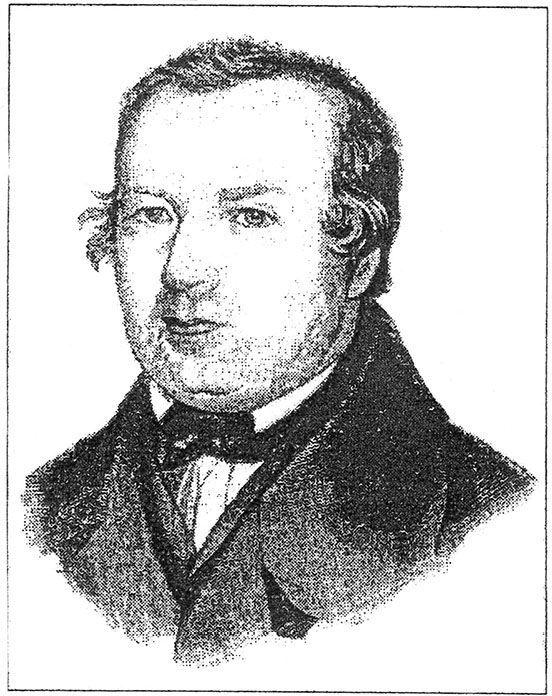
Conductor Iosef German (Jozef Herman), Master of Ballroom Music. 1830s. Engraving. (Bukharkin, Deviatnadtsatyi vek, p. 115) [full resolution image]
Image 202
Professor Richard Risley and his sons, John and Henry, American aerialists, performed in St. Petersburg.
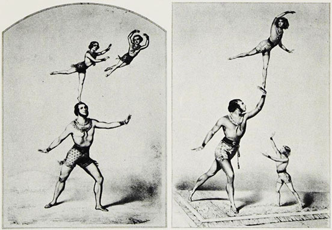
Two drawings of Professor Risley and his sons in the “Ballet Aérien”: by Alexandre Lacauchie in 1844 and J. Petit in 1845 respectively (Winter, Theatre of Marvels, p. 143) [full resolution image]
Image 203
The communicants of the English Church and of the British and American Congregational Church contributed generously in February 1847 to aid the Irish and Scottish famine sufferers.
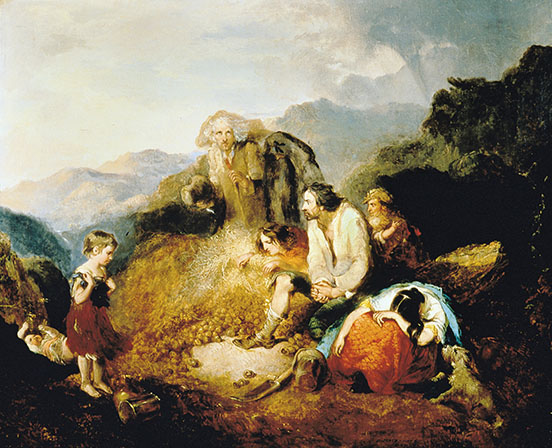
Daniel MacDonald (1821–1853). An Irish Peasant Family Discovering the Blight of Their Store. 1847. 33 x 40 in. National Folklore Collection, University College, Dublin, Ireland. [full resolution image]
Image 204
Karl Briullov’s Last Day of Pompeii, like Théodore Géricault’s Raft of the Medusa, represented the current mainstream of historical painting.
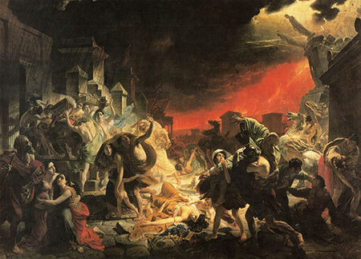
Karl Briullov (1799–1852). The Last Day of Pompeii. 1830–1833. Oil on canvas. State Russian Museum, St. Petersburg. [full resolution image]
Image 205
Théodore Géricault’s Raft of the Medusa
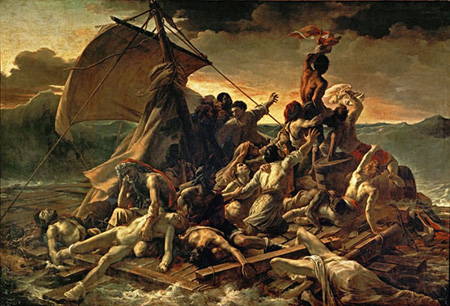
Théodore Géricault (1791–1824). Raft of the Medusa. 1819. Oil on canvas. 16.1 x 23.4 ft. (491 x 716 cm). Louvre Museum, Paris (INV 4884). [full resolution image]
Image 206
This painting is an example of Briullov’s striving for “effect” through deliberate exaggeration of colors.
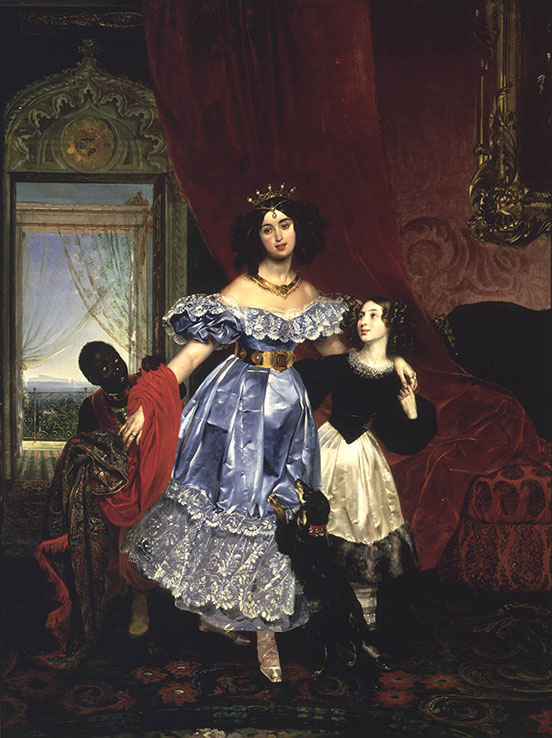
Karl Briullov (1799–1852) Portrait of Countess Julia Samoilova with Foster Daughter Giovannina and Black Servant. c. 1832–1834. Oil on canvas. 105.5 x 78.7 in. (268.1 x 200 cm). Inscribed in lower left in black Latin characters: Brulloff. Hillwood Museum, Washington, DC (51.73); bequest of of Marjorie Merriweather Post, 1973. [full resolution image]
Image 207
Johann Heinrich Füssli’s The Lazar House, which Francis Seymour Haden bought a print of for James in 1849, thus starting him as a collector
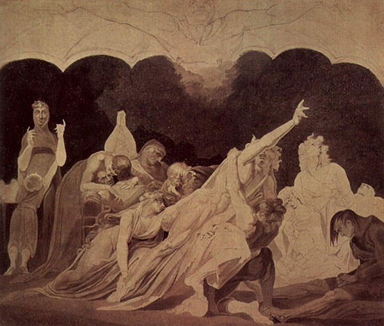
Johann Heinrich Füssli (1741–1825). Vision of the Lazar House. 1791–1793. Oil on canvas. Kunsthaus, Zürich, Switzerland. [full resolution image]
Image 208
Thomas Wright, who made a watercolor drawing of Anna Whistler in 1845 in St. Petersburg
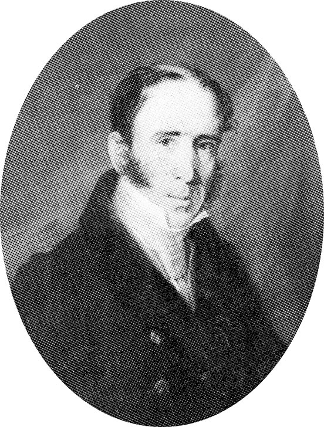
Vasilii Aleksandrovich Golike (1802–1848). Portrait of Thomas Wright. 1834. Detail from larger collage. State Tret’iakov Gallery, Moscow. [full resolution image]
Image 209
William Boxall, who painted the portrait of the fourteen-year-old James Whistler in London
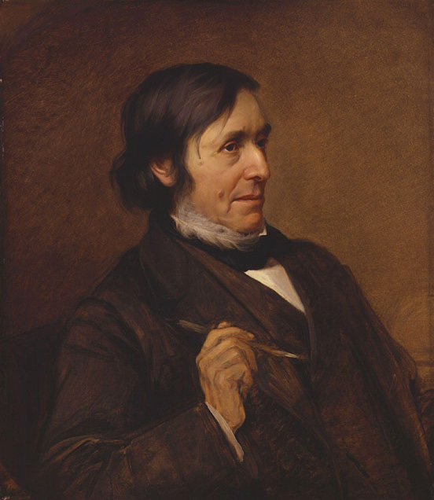
Michel Angelo Pittatore (1825–1903). Sir William Boxall. 1870. Oil on canvas. 69.2 x 60 cm (27.2 x 23.6 in). National Portrait Gallery, London (NPG 937).
Image 210
Charles Robert Leslie, whose art lectures in London in 1849 James Whistler attended
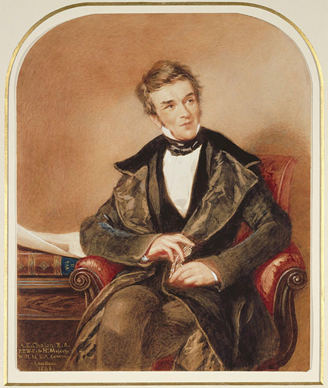
Alfred Edward Chalon (1780–1860). Portrait of C.R. Leslie, R.A. 1848. Watercolour on wove paper. 38.0 x 30.5 cm. Royal Academy of Arts, London.
Image 211
“Blue Gown,” by Ethel Traphagen, descendant of John Stevenson Maxwell, was inspired by James Whistler’s Nocturne: Blue and Gold - Old Battersea Bridge.
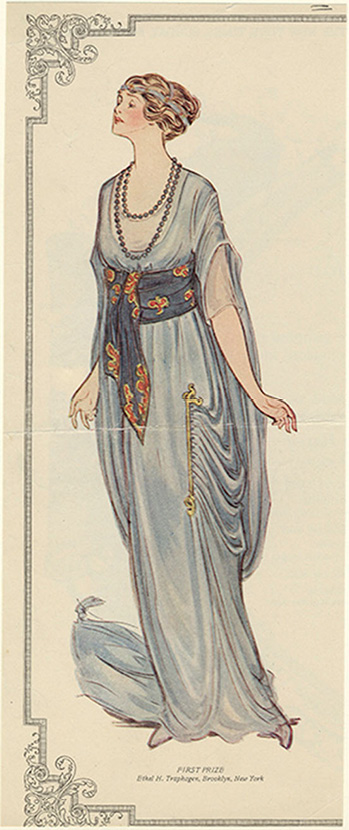
Blue Gown, 1913. Photograph. The Miriam and Ira D. Wallach Division of Art, Prints and Photographs: Picture Collection, The New York Public Library (ID 816801).
Image 212
Nocturne: Blue and Gold - Old Battersea Bridge by James Whistler, the inspiration for Ethel Traphagen’s “Blue Gown” design
While the Hadens were on their honeymoon in October 1847, Anna Whistler visited their home at 62 Sloane Street, where she saw, adorning the walls of Deborah’s boudoir, watercolors made by Seymour during his travels in Italy in 1843 and 1844. While she does not describe those watercolors, images 213–222 include most of the extant images from those trips.
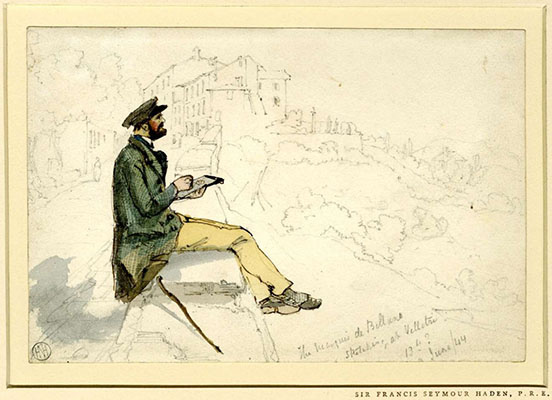
Francis Seymour Haden (1818–1910). Portrait of the Marquise de Belluno sketching at Velletri. 1844. Pen and brown ink, with graphite and watercolor. 13.8 x 20.5 cm. Inscribed with title and dated: “13th? [?] June/44.” British Museum, London (1935,1214.9).
Image 214
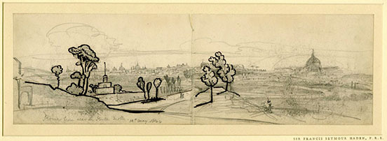
Francis Seymour Haden (1818–1910). Rome from near the Ponte Molle. 1844. Graphite, with pen and black ink; on two conjoined leaves. 9.9 x 31.9 cm. Inscribed with title and dated “15th. May.1844.”; inscribed on verso of one leaf: “sketch of the Castello S. Angelo etc.” British Museum, London (1935,1214.11).
Image 215
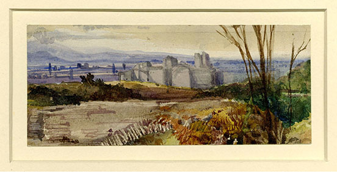
Francis Seymour Haden (1818–1910). Baths of Caracalla, Rome. 1844. Watercolor. 7.4 x 17.6 cm. Inscribed on verso (according to register, by the artist): “Baths of Caracalla.” British Museum, London (1935,1214.12).
Image 216
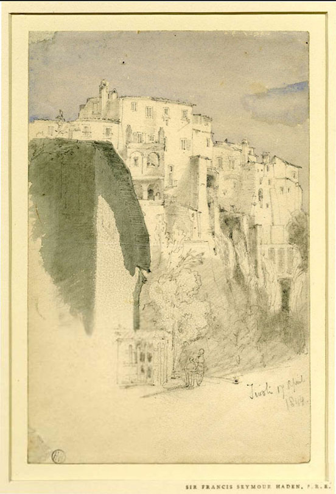
Francis Seymour Haden (1818–1910). View at Tivoli. 1844. Graphite with watercolor. 23.7 x 15.7 cm. Inscribed and dated: “Tivoli 17 April 1844.” British Museum, London (1935,1214.10).
Image 217
Francis Seymour Haden (1818–1910). Portrait of Duval le Camus. 1844. Pen and brown ink, with graphite and wtercolor. 12.8 x 18.9 cm. Inscribed and dated: “Roma 9. April 1844 Duval le Camus painting.” British Museum, London (1935,1214.18).
Image 218
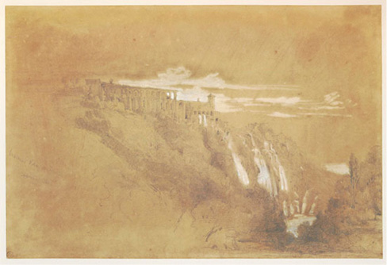
Francis Seymour Haden (1818–1910). Maecenas’ Villa at Tivoli. 1844. Graphite, heightened with white, on brown paper. 28 x 41.6 cm. Inscribed with title and dated: “April 17th 1844.” British Museum, London (1937,0612.7).
Image 219
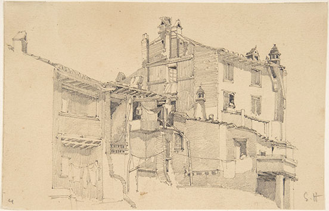
Francis Seymour Haden (1818–1910). Houses on the Tiber. Graphite. 4x 6½ in. (10.6 x 16.5 cm). Metropolitan Museum of Art, New York (17.3.2418).
Image 220
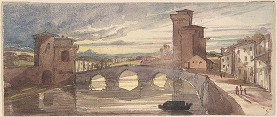
Francis Seymour Haden (1818–1910). Pisa. 1843–1844. Watercolor over graphite. 2x 4 in. (5.2 x 12.2 cm). Metropolitan Museum of Art, New York (17.3.2417).
Image 221
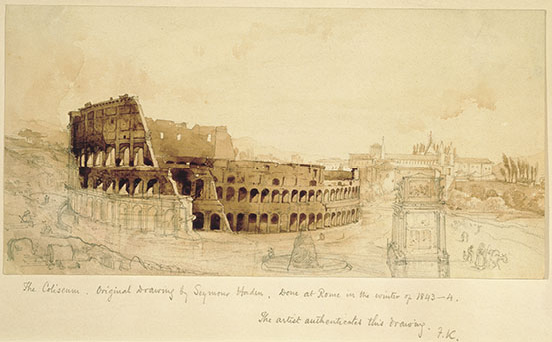
Francis Seymour Haden (1818–1910). The Colosseum. 1843–1844. Pencil and watercolor on paper. 6x 12¼ in. (15.56 x 31.11 cm). Albright-Knox Art Gallery, Buffalo, New York (1891:3.36); gift of Dr. Frederick H. James, 1891.
Image 222
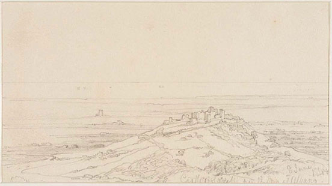
Francis Seymour Haden (1818–1910). Castle of Savelli. From the Inn at Albano. 1844. Pencil and watercolor on paper. Inscribed with title and dated: “8th June 1844.” Victoria and Albert Museum, London (E.3216-1911).